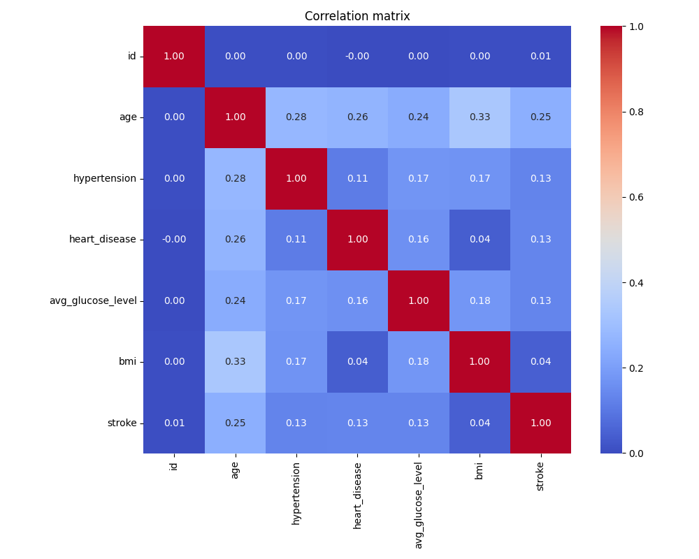
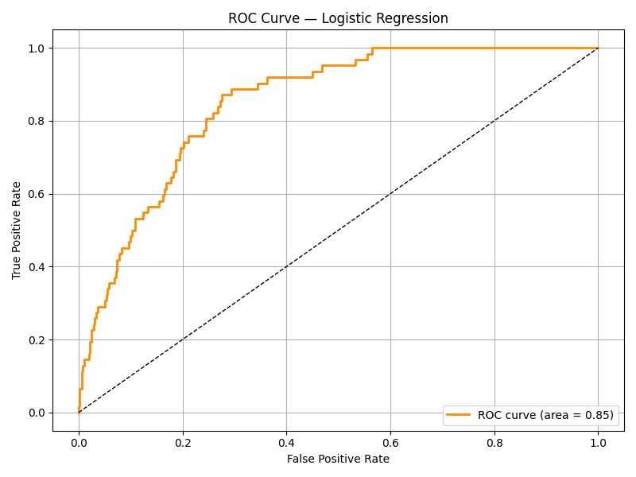
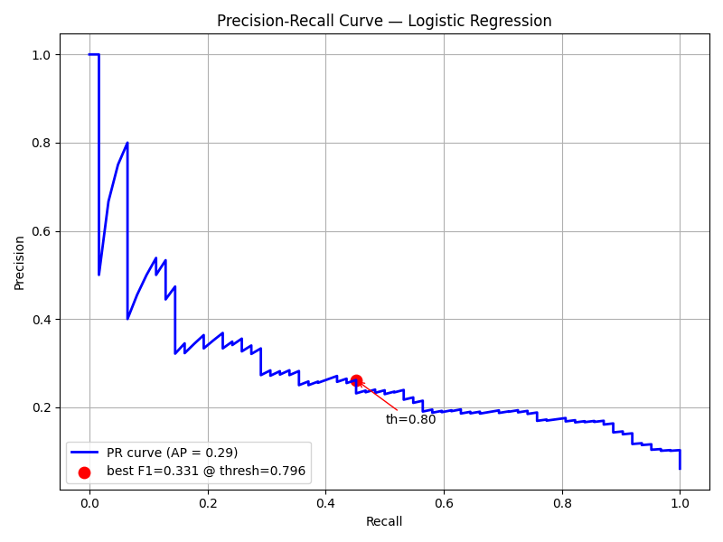
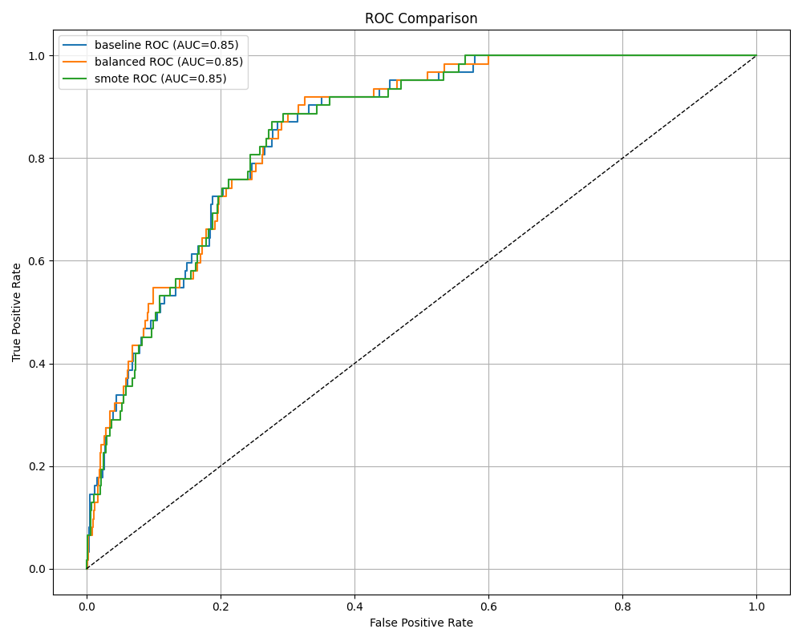
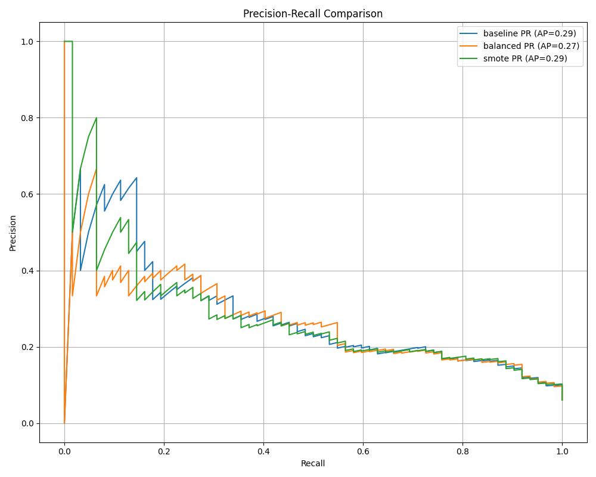

| Unnamed: 0 | id | gender | age | hypertension | heart_disease | ever_married | work_type | Residence_type | avg_glucose_level | bmi | smoking_status | stroke |
|---|---|---|---|---|---|---|---|---|---|---|---|---|
| count | 5110.000000 | 5110 | 5110.000000 | 5110.000000 | 5110.000000 | 5110 | 5110 | 5110 | 5110.000000 | 4909.000000 | 5110 | 5110.000000 |
| unique | NaN | 3 | NaN | NaN | NaN | 2 | 5 | 2 | NaN | NaN | 4 | NaN |
| top | NaN | Female | NaN | NaN | NaN | Yes | Private | Urban | NaN | NaN | never smoked | NaN |
| freq | NaN | 2994 | NaN | NaN | NaN | 3353 | 2925 | 2596 | NaN | NaN | 1892 | NaN |
| mean | 36517.829354 | NaN | 43.226614 | 0.097456 | 0.054012 | NaN | NaN | NaN | 106.147677 | 28.893237 | NaN | 0.048728 |
| std | 21161.721625 | NaN | 22.612647 | 0.296607 | 0.226063 | NaN | NaN | NaN | 45.283560 | 7.854067 | NaN | 0.215320 |
| min | 67.000000 | NaN | 0.080000 | 0.000000 | 0.000000 | NaN | NaN | NaN | 55.120000 | 10.300000 | NaN | 0.000000 |
| 25% | 17741.250000 | NaN | 25.000000 | 0.000000 | 0.000000 | NaN | NaN | NaN | 77.245000 | 23.500000 | NaN | 0.000000 |
| 50% | 36932.000000 | NaN | 45.000000 | 0.000000 | 0.000000 | NaN | NaN | NaN | 91.885000 | 28.100000 | NaN | 0.000000 |
| 75% | 54682.000000 | NaN | 61.000000 | 0.000000 | 0.000000 | NaN | NaN | NaN | 114.090000 | 33.100000 | NaN | 0.000000 |
| max | 72940.000000 | NaN | 82.000000 | 1.000000 | 1.000000 | NaN | NaN | NaN | 271.740000 | 97.600000 | NaN | 1.000000 |
| NaN | 0 |
| bmi | 201 |
| stroke | count |
|---|---|
| 0 | 4861 |
| 1 | 249 |





| Model | Accuracy | Precision | Recall | F1-Score | ROC-AUC | Avg Precision |
|---|---|---|---|---|---|---|
| Baseline (Logistic) | 0.9393 | 0.8823 | 0.9393 | 0.9100 | 0.8512 | 0.2872 |
| Balanced (Logistic) | 0.7505 | 0.9328 | 0.7505 | 0.8145 | 0.8529 | 0.2739 |
| SMOTE+Balanced (Logistic) | 0.7515 | 0.9343 | 0.7515 | 0.8153 | 0.8502 | 0.2853 |
Metrics shown: weighted averages from classification report. ROC-AUC available for Logistic model only.
Best threshold: 0.7416212483832749
| Feature | Importance |
|---|---|
| age | 0.3829 |
| avg_glucose_level | 0.2039 |
| bmi | 0.1791 |
| ever_married | 0.0316 |
| hypertension | 0.0285 |
| Residence_type | 0.0242 |
| gender_Male | 0.0236 |
| heart_disease | 0.0233 |
| smoking_status_never smoked | 0.0202 |
| work_type_Private | 0.0196 |
| smoking_status_formerly smoked | 0.0181 |
| work_type_Self-employed | 0.0176 |
| smoking_status_smokes | 0.0175 |
| work_type_children | 0.0096 |
| work_type_Never_worked | 0.0001 |
| gender_Other | 0.0000 |
The models were evaluated on an imbalanced dataset. The class-weighted and SMOTE strategies improved recall for the minority stroke class, but at a cost in precision. RandomForest feature importances reveal the most predictive features. Use the precision-recall curve and best-F1 threshold in production to balance false positives and false negatives in line with clinical risk tolerance.